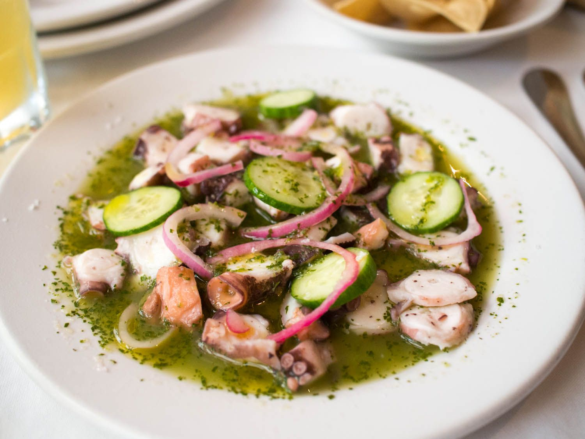

Aguachiles

Mexicos Finiest Spicy seafood
Ceviche of raw shrimp mixed with lime juice, red onion, pepper, cucumber, chile piquín or chopped green chile (serrano or jalapeño)
Ingredients
- Raw Shrimp
- Lime Juice - Enough to cover the shrimp and cook them.
- Salt
- Sliced Red Onion
- Vinegar - I'm using simple white vinegar, though you can use others.
- Water - Enough to cover the onions
- Lime Juice - Reserve some of the lime juice from marinating the shrimp, or use fresh if you'd like.
- Jugo Maggi - or use Soy Sauce
- Produce - Garlic, cilantro, jalapeno peppers, serrano peppers
- Sliced cucumber, radish, serrano, chopped cilantro, spicy chili flakes
Steps
- COOK THE SHRIMP: Thinly slice the shrimp in half lengthwise. Place the sliced shrimp into a bowl and cover with 1 cup fresh lime juice, enough to completely cover the shrimp. Use more as needed. Add salt to taste let the lime juice "cook" the shrimp for 20 minutes to 30 minutes, flipping once part way through. The shrimp will turn pink in color.
- SOAK THE RED ONION: While the shrimp is cooking, add the red onion to a bowl. Add the vinegar and enough water to cover the onions. Soak until ready to use. This will take some of the bite out of the raw red onion.
- PROCESS THE AGUACHILE MARINADE: Add the 1/2 cup reserved lime juice, jugo maggi (or soy sauce), garlic, cilantro, jalapeno, serrano, and salt to taste to a blender or food processor. Process until smooth.
- ASSEMBLE THE AGUACHILE: Add the shrimp with remaining lime juice to a serving bowl. Pour the chili-lime marinade over it. Season with salt if desired.Top with sliced cucumber and onion, chili peppers, and radish. Cover and refrigerate at least 30 minutes to chill.Top with fresh herbs. Sprinkle with red chili flakes.
HomePage